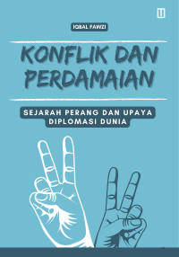
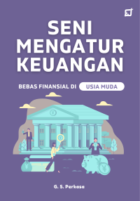
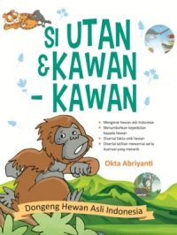
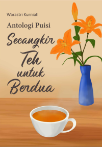

 |
 |
 |
 |
| Judul Buku | Penulis | Penerbit | Tahun Terbit | Link Buku |
|---|---|---|---|---|
| Nineteenth Century Questions Sejarah Dunia Abad Ke-19 | James Freeman Clarke | Indoliterasi |
|
klik sini |
| Konflik dan Perdamaian: Sejarah Perang dan Upaya Diplomasi Dunia | Iqbal Fawzi | Lokajaya Media |
|
klik sini |
| Seni Mengatur Keuangan; Bebas Finansial di Usia Muda | G. S. Perkasa | Silda Impika | klik sini | |
| Si Utan & Kawan-Kawan Dongeng Hewan Asli Indonesia | Okta Abriyanti | Noktah | klik sini | Antologi Puisi Secangkir Teh untuk Berdua | Warastri Kurniati | Deepublish | klik sini |
| Judul Buku | Kutipan |
|---|---|
| Nineteenth Century Questions Sejarah Dunia Abad Ke-19 | "Sejarah bukan sekadar deretan angka tahun, melainkan saksi bisu bagaimana kemanusiaan terus berjuang keluar dari kegelapan menuju cahaya kemajuan melalui revolusi dan pemikiran." | Konflik dan Perdamaian: Sejarah Perang dan Upaya Diplomasi Dunia | "Perdamaian yang sejati tidak lahir dari kemenangan satu pihak atas pihak lain, melainkan dari keberanian kedua belah pihak untuk meletakkan senjata dan mulai saling mendengarkan." |
| Seni Mengatur Keuangan; Bebas Finansial di Usia Muda | "Kekayaan tidak diukur dari seberapa banyak yang kamu hasilkan hari ini, tetapi dari seberapa bijak kamu menahan diri untuk tidak menghabiskan semuanya demi masa depan yang lebih tenang." | Si Utan & Kawan-Kawan Dongeng Hewan Asli Indonesia | "Hutan adalah rumah bagi semua, dan setiap penghuninya punya cerita. Jika kita menjaga rumah mereka, kita sebenarnya sedang menjaga napas kita sendiri." |
| Antologi Puisi Secangkir Teh untuk Berdua | "Dalam kehangatan secangkir teh, ada percakapan yang tak butuh banyak kata—hanya kehadiranmu dan kehadiranku yang saling melengkapi dalam hening." |